Guide
Every feature of Actor Tally 4.2, step by step. The screenshots are the real extension with made-up demo data — your own will show your names and numbers.
1. Install
Pick your browser's store. Firefox and Opera listings are in review; the buttons switch on when they're approved.
Brave, Vivaldi and most other Chromium-based browsers install it from the Chrome Web Store. Opera users can already do the same with Opera's “Install Chrome Extensions” add-on while the Opera listing is in review.
- Open the store page and click Add to Chrome, Get or Add extension (the wording depends on the store).
- Confirm the permission prompt. Actor Tally asks for four permissions and no access to any website; the privacy policy explains each one.
- Pin the icon so it's one click away: open the puzzle-piece menu in the toolbar and click the pin next to Actor Tally.
- Optional: Alt+Shift+A opens the popup from the keyboard. You can change the shortcut in your browser's extension shortcuts page.
2. Log your first entry
- Open a page with a video and click the Actor Tally icon. The popup reads the page title and its cast links and offers names under Detected on this page.
- Tap a name to select it. Tap it again to mark that person as a co-star; a third tap deselects. You can select several.
- Not detected? Type in Or type a name. It autocompletes from everyone you've logged. For several people, separate with commas; put
&before a co-star:Jane Doe, &Theo Grant. - Optionally rate (see half stars), set a duration in minutes or press Start to time it, choose a place (the icon appears once you've made places), and add tags — type them with commas, or tap the past-tag chips.
- Press Log. The popup confirms with each person's running count.
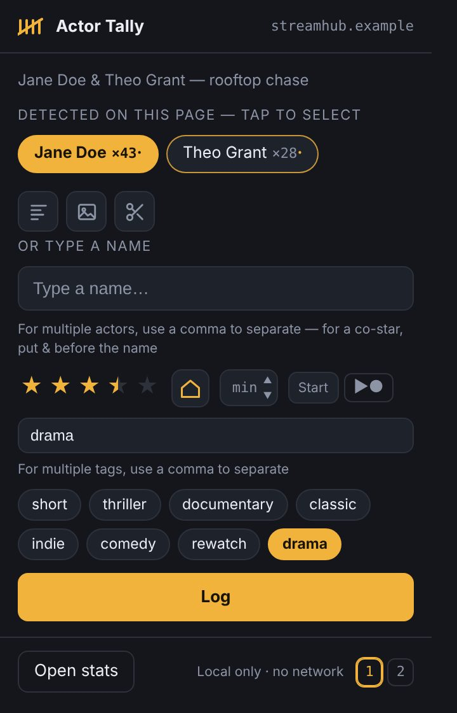
When a site hides its names
- Manual picker (the lines icon): the popup closes and you click a name anywhere on the page.
- Image picker (the picture icon): click an image on the page to use it as the selected person's card photo.
- Screenshot (the scissors): drag a box around part of the screen to use as the photo. Your half-filled form is kept while you do it.
- Video position (the ▶● button): when switched on, a log also stores how far into the video you were, read once when you press Log.
3. Half-star ratings
- Click a star once for the whole value: the fourth star gives 4.
- Click the same star again to make it a half: 3½.
- Click it a third time to clear the rating.
The same cycle works in the dashboard's rating editor and the manual log form. When editing several logs at once, type the value: 3.5 or 3,5. Half steps get their own chips in Explore and their own bars in the chart builder.
Want to start over? Settings → Star ratings → Delete all ratings removes every rating on the page you're viewing; the logs stay, and undo brings the ratings back.
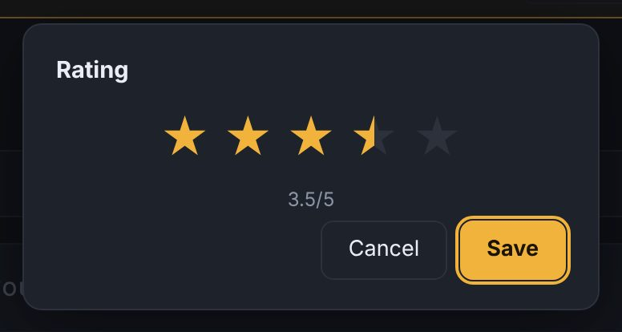
4. The dashboard
Click Open stats at the bottom of the popup. The dashboard opens in its own tab.
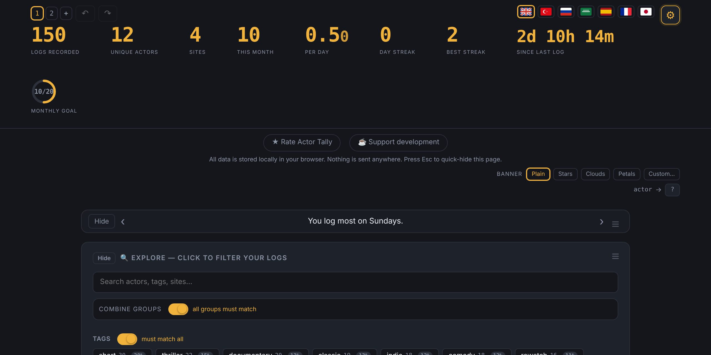
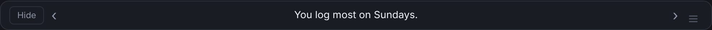
- Actor cards show each person's count, average rating, badges and most-used tags. Sort and filter them from the bar above.
- Activity calendar colours every day by how much you logged; click a day to filter to it.
- Time spent turns durations into totals, a length distribution and a monthly trend.
- Chart builder: pick a measure, a grouping and a chart type. Tick Use current Explore filters to chart only what you've filtered. Save as image downloads it.
- Yearly recap builds story-style slides for any year, ready to save.
- Milestones and badges track totals, hours, places and co-star appearances.

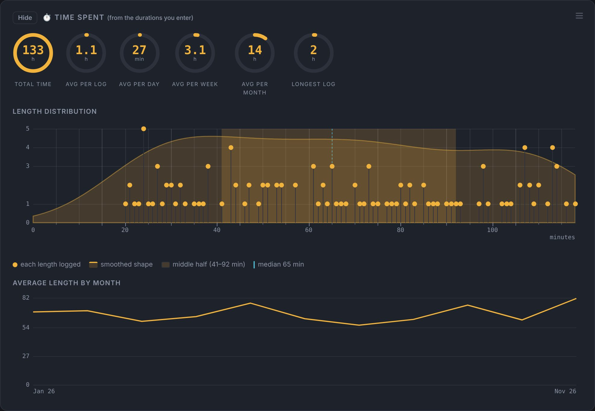
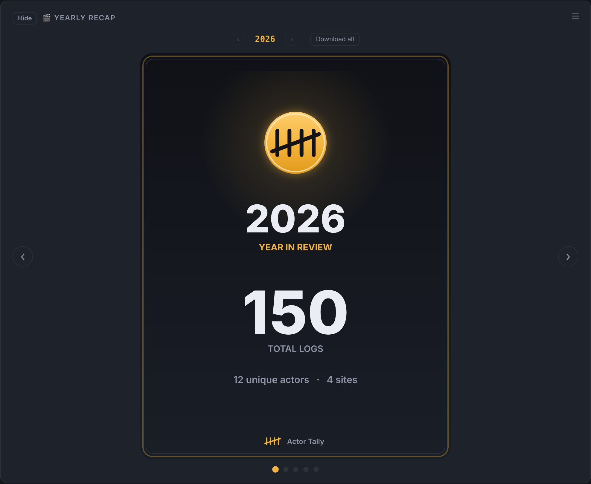
5. Explore and filters
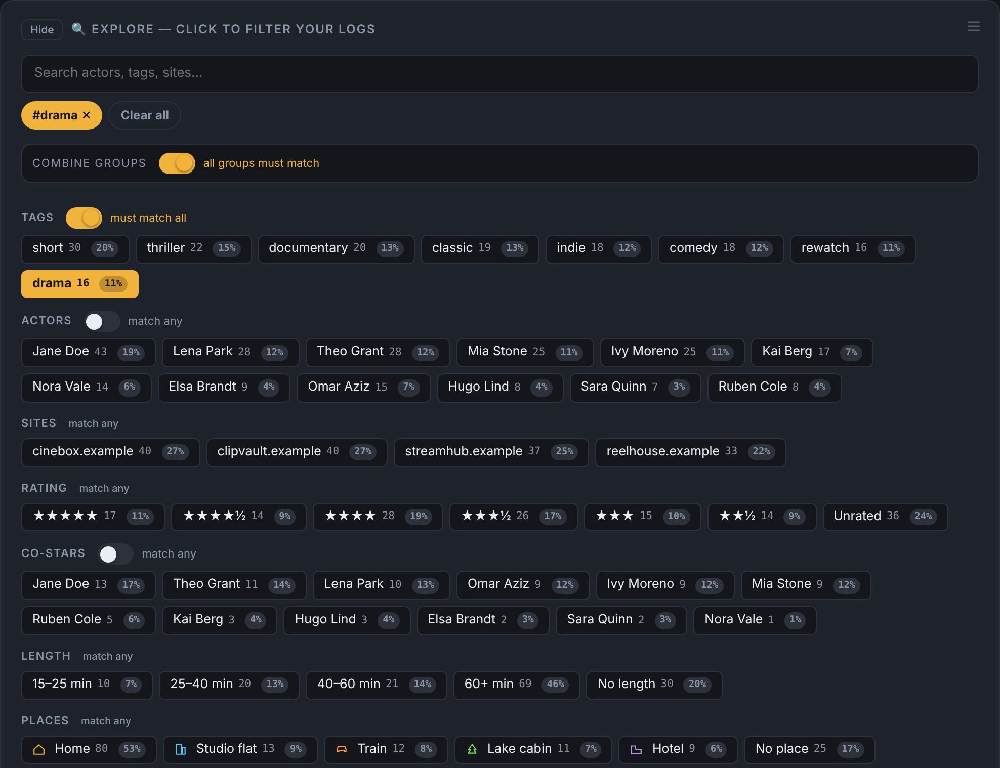
- Click any chip — a tag, a person, a site, a rating, a place, a length or a time of day — to filter. The results list underneath updates at once.
- Each group has its own switch: any (a log may match one of the chosen values) or all (it must match every one).
- Combine groups at the top decides whether every group must match or any group is enough.
- Type in the search box to find a person, tag or site quickly. Click a chip again, or Clear all, to remove filters.
6. Fix any log
- In Recent entries, click a log's ℹ button to open its details.
- Every field is listed in full: actors, rating, site, title, the whole link, video position, duration, place, tags, date and time.
- Click the pencil next to a field to change it. Copy all copies the log as text.
- To change many logs at once, press Select above the table, tick the logs and choose Edit selected or Delete selected.
Ctrl+Z undoes up to twenty steps and Ctrl+Shift+Z redoes them. Deleted logs wait in the trash for 30 days.
Watched something away from this browser? Add a log manually lets you set the date, time, people and every other field yourself.
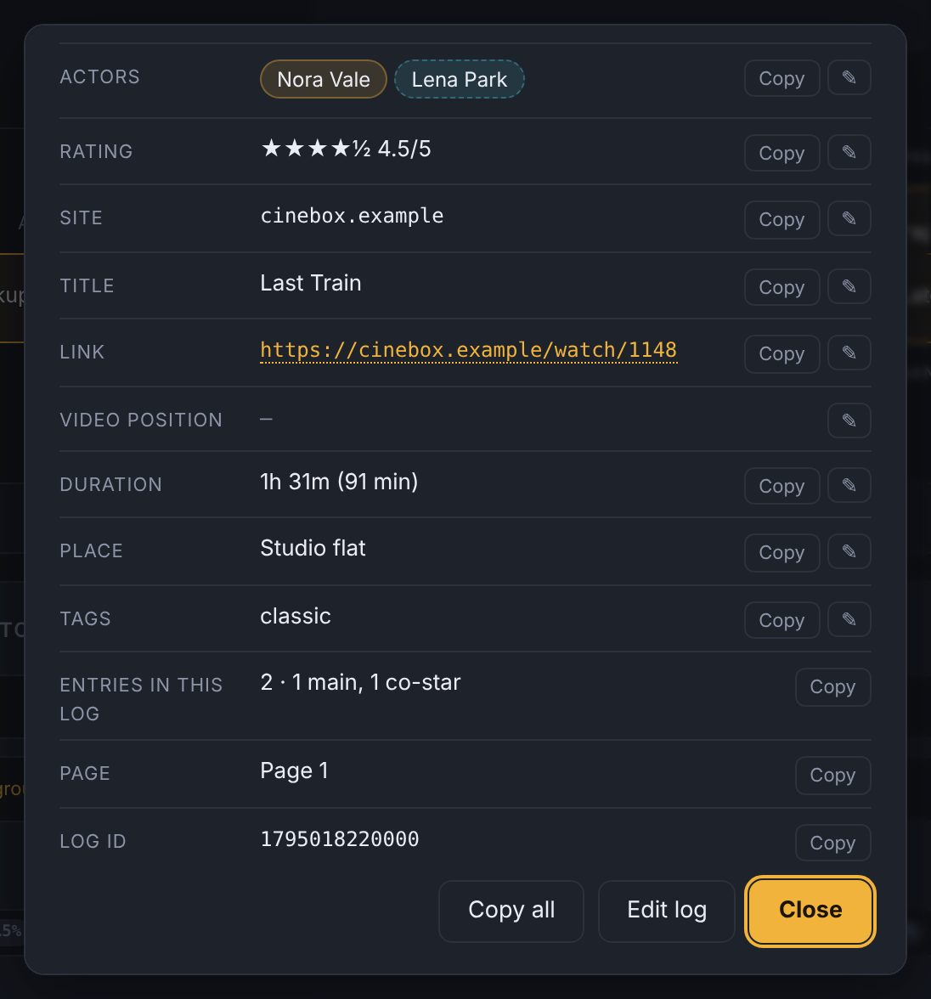
7. Places and the map timeline
- Open Settings → Places → Open and press Add place. Give it a name, an icon and a colour.
- To put it on the map, type its coordinates or click the spot on the map in the editor. Places without coordinates still work as labels.
- In the popup, pick the place with the place button before you log. The last one you used is remembered.
- Open Places map on the dashboard. Each pin grows with the number of logs there.

Replay your history
- Drag the date slider under the map. Pins show only the logs up to that day; places with none yet are dimmed.
- Press ▶ to play the whole history in about twelve seconds. Press it again to pause.
- Use Show only to pick one person, one tag, or both. Pins, slider and playback then follow just those logs. Show all resets it.
- All time returns to the full picture.
The map is drawn from data inside the extension. It works offline and makes no requests.
8. Manage tags
- Open Settings → Tags → Manage. Every tag on the page is listed with the number of logs that carry it.
- Rename changes a tag on every log at once. Renaming onto an existing tag asks before merging the two.
- Delete removes a tag from every log; the logs themselves stay.
- To merge several, tick their boxes, press Merge selected and type the name to keep.
Each change is one undo step, and it applies to the trash too, so a restored log never brings back an old tag. To edit one log's tags, use its details instead.
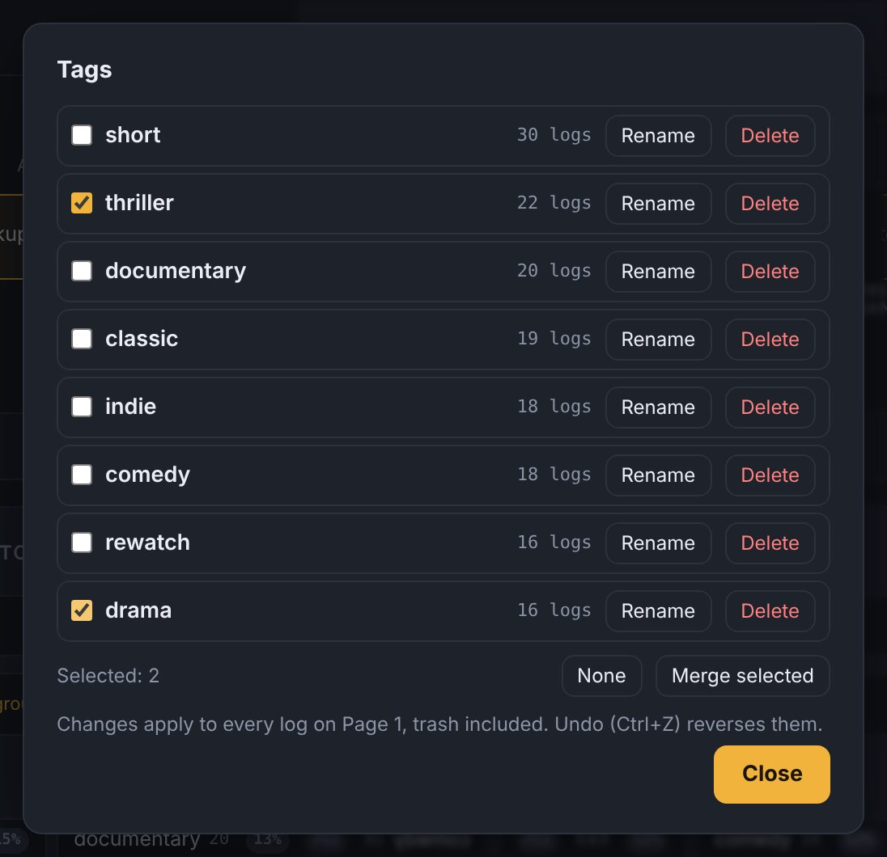
9. Settings
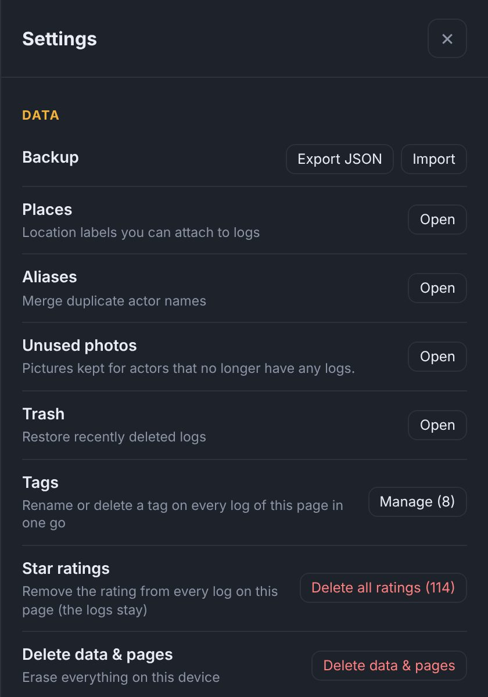
The gear at the top right of the dashboard opens Settings. Everything in it applies to the page you're viewing.
- Data: export and import, places, aliases, unused photos, trash, tags, star ratings, deleting data and pages, and the backup reminder.
- Appearance: dark, light or pink theme; how many rows tables show before “show more”; which panels appear; reset layout; how fast insights rotate.
- Privacy: how many past tags the popup suggests, setting or removing a PIN, and the quick-hide page.
Past tags in the popup
Choose None, a number, or All. None hides your tag history from the popup entirely; All scrolls when the list is long.
10. Backups and the reminder
Your data lives only in this browser. Clearing the browser's data or losing the computer loses it — unless you have a backup file.
- Settings → Backup → Export JSON. Tick the pages to include and press Export. A file lands in your downloads folder.
- Keep the file somewhere safe. If you use a PIN, the backup is your only way back from a forgotten PIN.
- To restore or move to a new computer: install Actor Tally there, then Settings → Backup → Import, choose the file and pick which page it lands on. Duplicates are skipped.
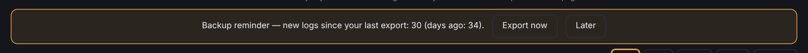
The backup reminder
After a number of new logs or a number of days since your last export — whichever comes first — a bar at the top of the dashboard offers an export. It counts every page, and stays quiet when there's nothing new to save.
- Export now opens the export.
- Later hides it for three days.
- Change the numbers (15 logs and 30 days by default) or switch it off under Settings → Backup reminder.
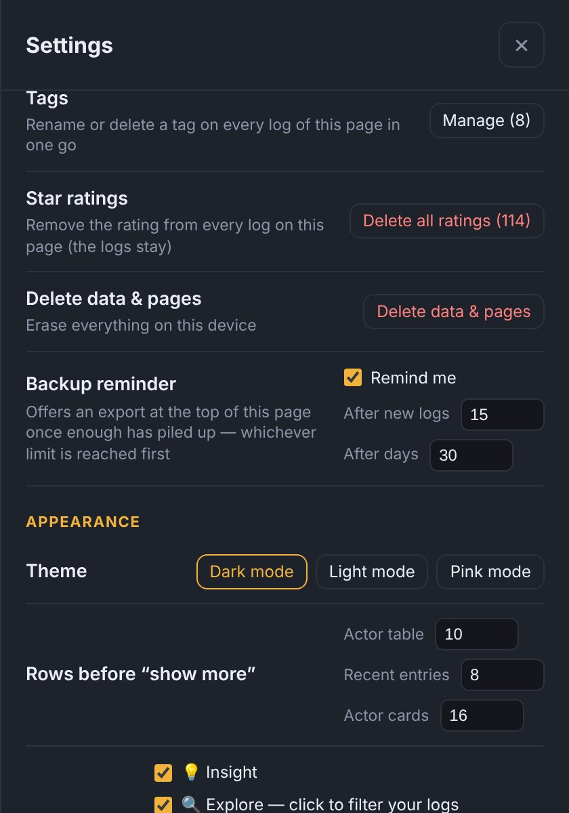
11. Four pages, your own word
- The numbered buttons at the top left of the dashboard switch between pages. + adds one, up to four.
- Each page keeps its own logs, aliases, places, photos, layout and trash.
- The actor → ? control under the banner replaces the word “actor” throughout the interface for that page — handy if you track something else.
- In the popup, the page buttons at the bottom right choose where new logs go. The choice is remembered.
12. PIN and quick hide
Set a PIN
- Settings → Set PIN. Read the warning: a forgotten PIN cannot be recovered by anyone.
- Choose 4–12 characters and enter it twice.
- Every page is now encrypted on your device. The dashboard asks for the PIN when you open it; the popup asks once per browser session.
Failed attempts are listed in the Security panel. To remove the PIN, use the same button and enter the current PIN.
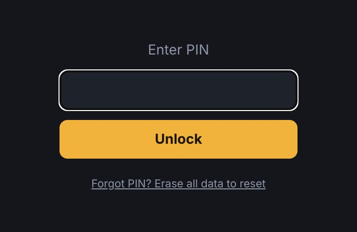
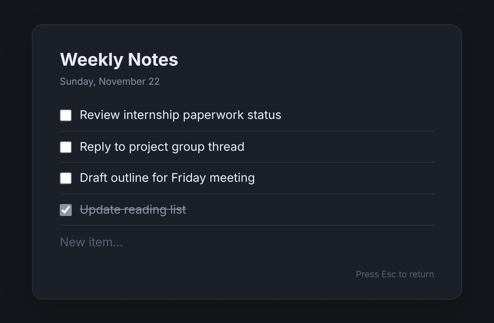
Quick hide
Press Esc on the dashboard and it is replaced by an ordinary to-do list. The list is real: you can rename it and add, tick or remove items. Press Esc again to come back.
Still stuck? The support page has quick answers and every way to reach a person.